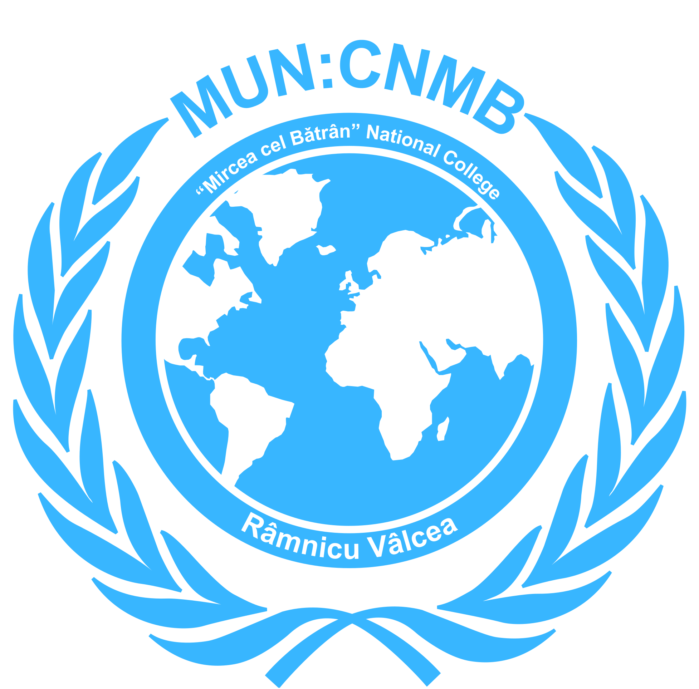

Documentele oficiale ale clubului, pentru consultare și descărcare.
Toate documentele oficiale MUN: CNMB vor fi disponibile printr-un link Google Drive. Urmărește această pagină pentru actualizări.
Întrebări? Scrie-ne la muncnmb.contact@gmail.com